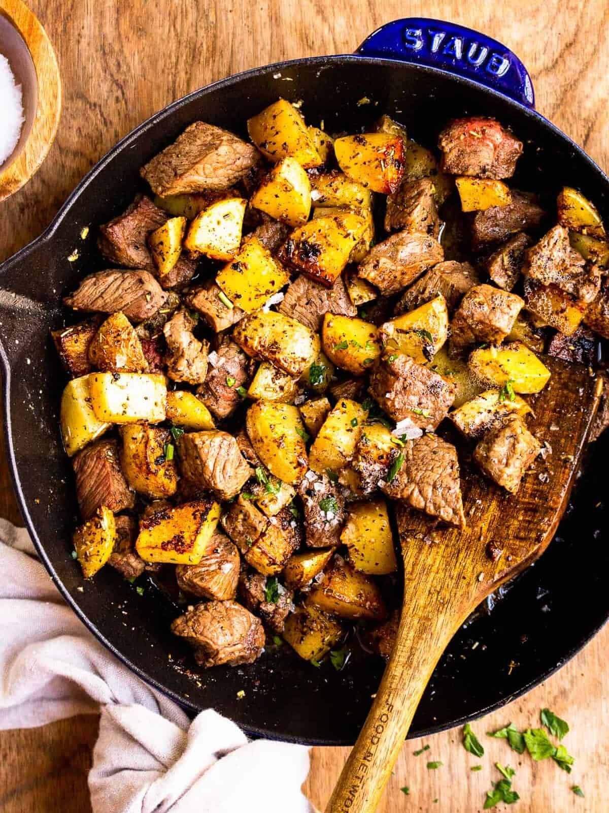

This is a personal Favorite
what you'll need
This dish is exceptionally easy to make. Just cut the steaks and taters up into cubes and season it all together in a cast iron over medium heat. Cook to preference. It's truly very easy.
Garlic Butter Steak and Potatoes